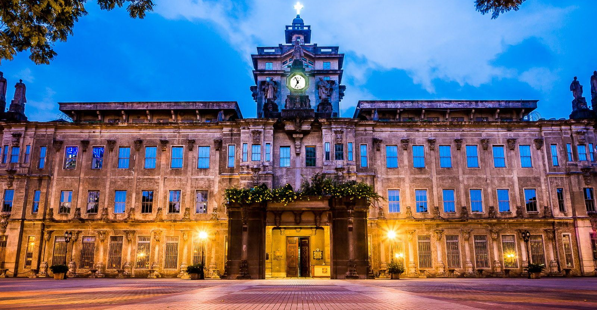

The University of Santo Tomas or UST is known as the official Pontificial, Royal, and Catholic University of the Philippines. Standing as Asia's oldest existing university with 414 years of teaching (and older than Harvard), and among the largest Catholic universities in the world regarding student densities in a single campus. It offers a wide range of degree programs ranging from the natural, health, applied, social and sacred sciences, to business and management.
University of Santo Tomas
"Veritas in Caritate"
Introduction
History
UST was founded in 1611, after Miguel de Benavides , known as the third Archbishop of Manila, allocated funds in 1605 for a seminary-college. It was initially named Colegio de Nuestra Señora del Santísimo Rosario but later renamed to Colegio de Santo Tomás .
In 1645, Pope Innocent X elevated it to the status of a university. Over time it received royal patronage from the Spanish crown (under King Charles III), and was recognized as a Pontifical University in 1902. Later in 1947 it was given the title “Catholic University of the Philippines.” Its campus moved from its original site in Intramuros to its present area in Sampaloc, Manila in 1927, and has endured disturbances during the Philippine Revolution and WWII.
Core Values:
- Competence: It is crucial for a Thomasian to have to be able to master your own discipline and adapt to the different settings.
- Commitment: It is expected that Thomasians must stay commited to studying and advancing in their discipline despite the adversities they may face.
- Compassion: While focused in the academia, students must embody traits of empathy, understanding, and a sense of urgency to help others in need.
| Identity | Mission | Vission |
|---|---|---|
| The University of Santo Tomas, the Pontifical, Royal, and Catholic University of the Philippines, is a Dominican institution of learning founded in 1611, under the patronage of St. Thomas Aquinas. | The University of Santo Tomas, in pursuit of truth guided by reason and illumined by faith, dedicates herself to the generation, advancement, integration, dissemination, and application of knowledge to form competent and compassionate persons committed to serve the Church, the nation, and the global community. | By 2030, the University of Santo Tomas, faithful to her centuries-old tradition of excellence, envisions herself as a leading Catholic institution of learning in the Asia-Pacific, committed to the integral formation of her stakeholders for social transformation. |